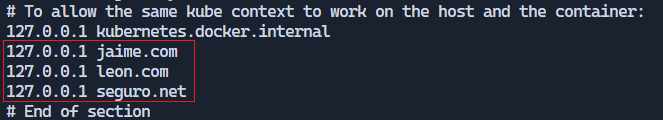

Tutorial Apache Web
Buscad los archivos en el proyecto para usarlos de referencia en vuestras creaciones
Estructura de archivos
Creamos la siguiente estructura de archivos (solo lo nombrado a continuación):
- Creamos carpeta
conf y copiamos archivos conf por defecto.

- Creamos carpetas
sites-available, copiamos archivos conf default y creamos archivos conf para cada webhost que vayamos a generar.
- Archivo
jaime.conf para web sin protocolo SSL.
- Archivo
seguro.conf para web con protocolo SSL.
- Creamos carpeta
websites y dentro creamos una carpeta para cada webhost.
- Creamos
html de web por defecto dentro de websites y html de cada web dentro de su carpeta.
- Creamos carpeta
errors y dentro cada html de cada error que vayamos a controlar.
- Creamos carpeta
privado dentro del webhost que configuraremos con SSL. A esta solo se accederá al iniciar sesión con el usuario autenticado. Además, crearemos el archivo .htaccess dentro.

- Creamos
script con los comandos que realizará el contenedor automáticamente al iniciarse. En nuestro caso habilitaremos los sitios creados, habilitaremos el módulo ssl y reiniciaremos el servicio de Apache para aplicar los cambios.
- Creamos carpeta
htpasswd (el archivo se añadirá más tarde).
- Creamos carpeta
certs (los archivos se añadirán más tarde).
- Creamos
docker-compose.yml con la configuración de nuestro contenedor.

Generación de certificados
Instalamos el programa OpenSSL.
Abrimos la terminal de OpenSSL y ejecutamos el siguiente comando (cambiar seguro por nombre de webhost):
openssl req -x509 -nodes -days 365 -newkey rsa:2048 -keyout seguro.key -out seguro.crt
Nos pedirá una serie de datos. Respondemos a los datos que pide y en el Common Name ponemos el nombre del webhost incluida la extensión (seguro.net).

Estos archivos se generarán en la ruta donde ejecutes el comando. Copia estos archivos a la carpeta certs.
Modificación del archivo hosts
Modificamos el archivo hosts de nuestro PC para generar los DNS de nuestros webhosts.
Vamos a la ruta: C:\Windows\System32\drivers\etc
Dentro de esta habrá un archivo hosts. Haremos una copia de este como backup.
Modificamos el archivo hosts añadiendo las IPs y nombres de nuestros webhosts.

Lanzamiento del contenedor
Lanzamos nuestro docker-compose.yml en la terminal con el comando:
docker-compose --build -d
Si tenemos algún error podemos borrar lo generado con el comando:
docker-compose down
Para acceder a la terminal del servidor generado usamos el comando:
docker exec -it apache_server /bin/bash
(También sirve bash).
Generación del archivo .htpasswd
Generamos archivo .htpasswd con el usuario y contraseña que deseemos.
Una vez dentro de la terminal de Apache, iremos a la ruta /etc/apache2 y pondremos el siguiente comando para crear el archivo.
htpasswd -c /etc/apache2/.htpasswd usuario
En usuario pondremos el nombre del usuario que queramos, y la contraseña la introduciremos cuando nos la pida.

El archivo se copiará directamente en la ruta de nuestro proyecto al haber creado el volumen en el docker-compose.yml.
Pruebas en el navegador
Ahora abrimos el navegador y buscamos las siguientes rutas:
http://jaime.com:8080http://leon.com:8080https://seguro.net:8443https://seguro.net/privado ➡️ Aquí introducimos los credenciales generados con htpasswd
Autor
Realizado por Jaime León Mulero